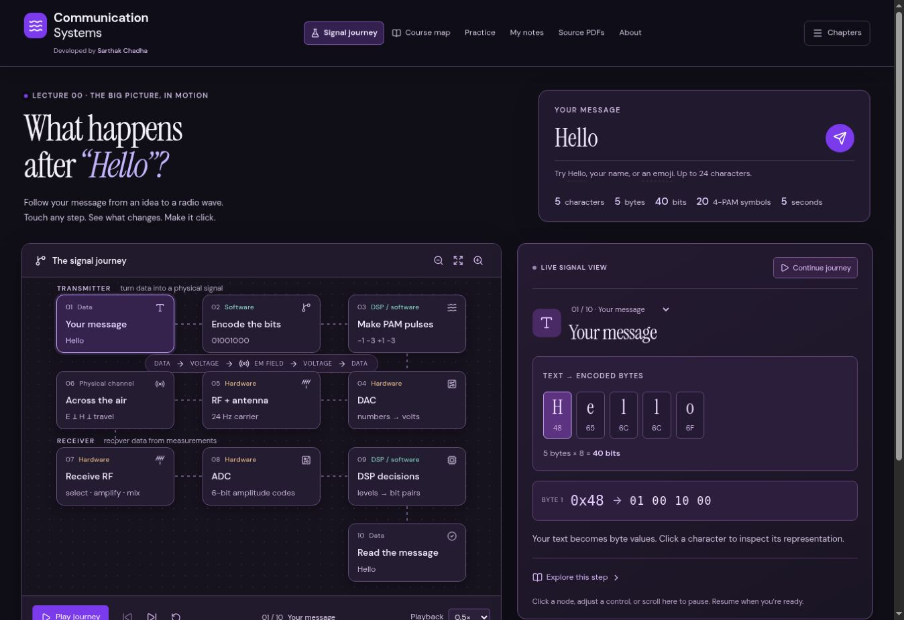
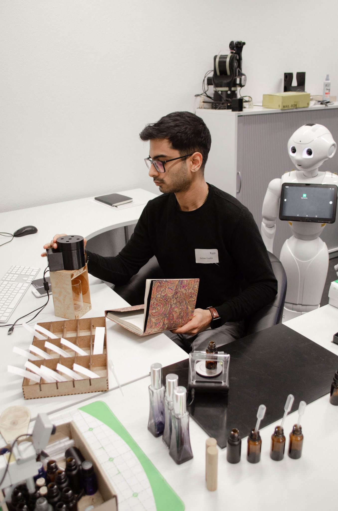
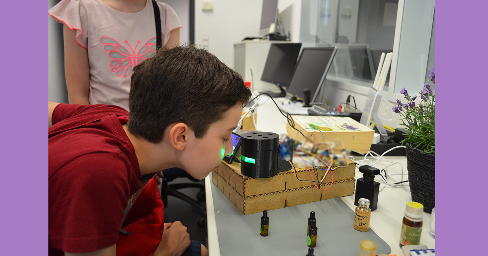
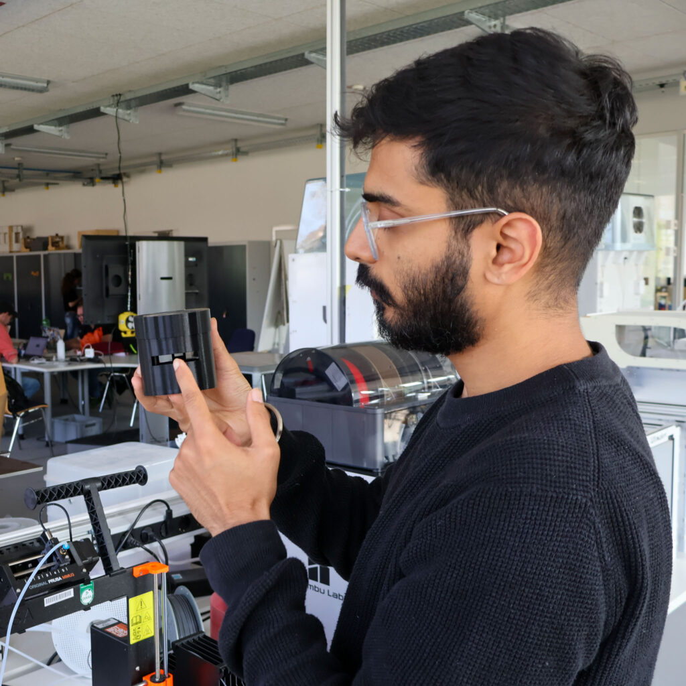
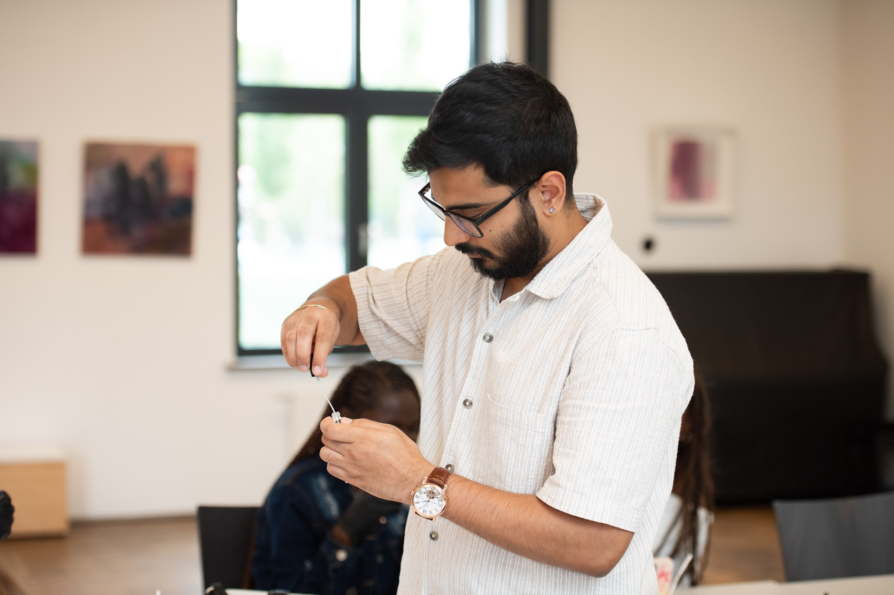
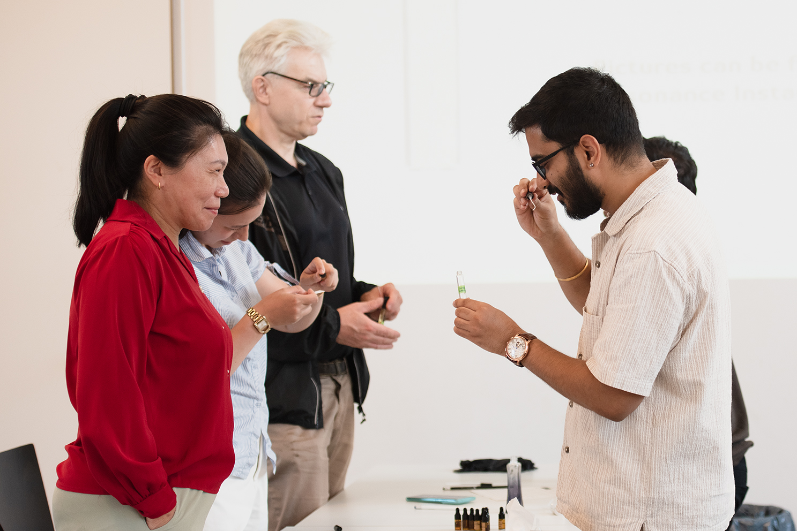

01

Communication Systems
Send a message from text to radio wave and back. A hands-on learning lab for bits, signals and the hardware between them.
Open the interactive applicationI’m Sarthak Chadha. I build interactive systems, explore human experience and work with the art and science of scent.

Software, signals and physical systems made tangible through interaction.
Human–computer interaction, sensing and the way people experience technology.
Natural materials, scent composition and shared moments of discovery.
Open an application, explore a prototype or follow the research behind it.

Send a message from text to radio wave and back. A hands-on learning lab for bits, signals and the hardware between them.
Open the interactive applicationExploring a unified workflow for eye tracking and biosignals, with research focused on onboarding and calibration.
Explore the researchAn inspectable processing workflow for electrodermal activity: from recordings and baseline correction to visualizations and exports.
Open the source repository ↗Bringing scent into digital interaction. Custom olfactory displays connect physical materials with multisensory experiences.
Explore the olfactory projectIndependent projects, research tools and experiments in progress.
All projectsWhat happens when scent becomes part of an interface? Through Synesthesia, I develop olfactory display prototypes and explore how smell can work alongside visual and auditory feedback.
The work connects embedded systems, physical materials and human–computer interaction.
Discover Synesthesia
My work moves between software, laboratory prototypes and the perfume table.
My background in Communication and Information Engineering meets a practical interest in human–computer interaction, physiological sensing and immersive experiences. At Hochschule Rhein-Waal, my work connects research with hands-on prototyping.
Alongside engineering and research, I practise natural perfumery and lead scent workshops through Essentia Resonance. Across these settings, I’m interested in how we understand, interact with and sense the world around us.
A story from the laboratories
of Rhine-Waal University.

A look inside the laboratories behind my olfactory research: extracting botanical materials, exploring responses to scent, and prototyping a display that brings smell into digital experiences.
Laborfunk: Sarthak Chadha’s journey through the HSRW labs
Full article available in English and GermanGuest lectures, public talks and hands-on experiences that open up the work.

A guest lecture at Hochschule Rhein-Waal exploring smell as an interaction modality through a shared scent experiment, live biometric signals and student-designed UX concepts.

Co-presenting botanical extraction research with Raphael Komanek, connecting pine-forest memories, ultrasonic-assisted extraction and a hands-on smelling session.

Welcoming visitors to explore Synesthesia VR and Pepper through hands-on demonstrations of olfactory interfaces and human–robot interaction, with coverage in Rheinische Post.
Hochschule Rhein-Waal / Classrooms, laboratories & public spaces
All talks & engagementThrough Essentia Resonance, I work with botanical materials, compose natural perfumes and guide workshops that invite people to explore scent for themselves.


For research conversations, software collaborations, sensory experiences and curious ideas.
Connect on LinkedIn